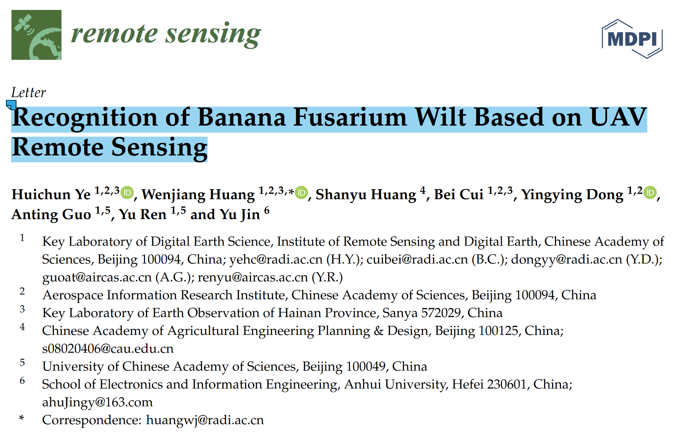
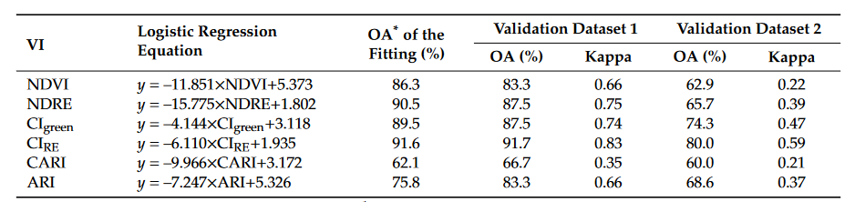

期末大作业：文献中的实验方法和数据分析方法学习汇报
源文件为ipynb格式。
源文件链接：
GitHub Mosazh_AEDSA
Gitee Mosah_AEDSA
参考文献 Recognition of Banana Fusarium Wilt Based on UAV Remote Sensing原文见附录。

参考文献中主要使用了二分类逻辑回归 (Binary Logistic Regression)此方法来进行对于数据的统计分析,评估了 VIs 与受镰刀菌枯萎病感染或未感染植株之间的空间关系。
文献中使用了BLR方法来确定建立香蕉枯萎病识别模型的最佳敏感光谱波段或植被指数，以及评估不同图像分辨率对香蕉镰刀菌枯萎病识别精度的影响，为卫星数据的大规模应用提供参考。
参考文献中使用的八种VIs
| Vegetation Index | Description | Formulation | Sensitive Parameter |
|---|---|---|---|
| Normalized difference vegetation index | Leaf area index, green biomass | ||
| Normalized difference red edge index | Leaf area index, green biomass | ||
| Green chlorophyll index | Chlorophyll content | ||
| Red-edge chlorophyll index | Chlorophyll content | ||
| Structural independent pigment index | Pigment content | ||
| Red-edge structural independent pigment index | Pigment content | ||
| Carotenoid index | Carotenoid content | ||
| Anthocyanin reflectance index | Anthocyanin content |
不同植被指数的逻辑回归模型

由于无法获取到原始数据，故在本次作业中使用了Iris 鸢尾花数据集采用BLR进行数据分析

二分类逻辑回归模型构建
二分类逻辑回归是一种统计分析方法，用于建立一个二元因变量与一个或多个自变量之间的关系模型。它是一种广义线性模型，用于预测二元因变量的概率。在研究中，二元逻辑回归常用于解决分类问题，例如预测疾病的发生与否、判断某个事件是否发生等。该模型通过估计自变量与因变量之间的关系系数，从而预测因变量的概率。
BLR其实际分析上是研究X对于Y的影响，而且Y为二分类数据，比如是否愿意购买产品，是否喜欢，是否购买直播带货商品等。数字1代表YES，数字0代表NO。而且X对于Y的影响时，数学模型可构建如下：
经过简单变换，可以转换为：
优点：
- 实现简单。逻辑回归的参数可以用极大似然估计法进行求解，算法本身非常简单。
- 速度快。逻辑回归计算量小，训练速度快。
- 输出结果易于理解。逻辑回归的输出结果是概率，易于解释。
- 容易扩展。逻辑回归可用于多分类问题和不平衡数据集。
缺点：
- 只适用于线性可分的问题。当特征之间存在非线性关系时，Logistic回归的效果会受到限制。
- 对异常值敏感。由于Logistic回归使用了sigmoid函数，对于异常值非常敏感。
- 容易欠拟合。当特征与目标变量之间的关系非常复杂时，Logistic回归很容易出现欠拟合现象
Iris数据集数据处理
Iris数据集共有150个样本，目标变量为花的类别其都属于鸢尾属下的三个亚属（target），分别是山鸢尾 (Iris-setosa)，变色鸢尾(Iris-versicolor)和维吉尼亚鸢尾(Iris-virginica)。
四个特征，分别是花萼长度(sepal length)、花萼宽度(sepal width)、花瓣长度(petal length)、花瓣宽度(petal width)。
初始化
import numpy as np
import pandas as pd
import matplotlib.pyplot as plt
import seaborn as sns
import warnings
warnings.filterwarnings("ignore")
plt.rc("font",family='KaiTi') #指定中文字体，不然会乱码
#%matplotlib inline是Jupyter Notebook的魔术命令，用于在 Notebook 中以行内方式显示 matplotlib 绘图
%config InlineBackend.figure_format = 'retina' #绘制高清图像
%matplotlib inline
导入数据
# 从文件中读取iris数据集
iris_features = pd.read_csv('iris/iris.data', header=None, names=['sepal length', 'sepal width', \
'petal length', 'petal width', 'class'])
# 提取目标变量
iris_class = iris_features['class']
iris_target = np.repeat(np.arange(3), 50)
iris_target = iris_target.astype(int) # 将数据类型转换为整数类型
# 显示前几行数据
print(iris_features.head(),"\n")
## 查看数据的整体信息
iris_features.info()
## 查看每个类别数量
pd.Series(iris_target).value_counts()
sepal length sepal width petal length petal width class 0 5.1 3.5 1.4 0.2 Iris-setosa 1 4.9 3.0 1.4 0.2 Iris-setosa 2 4.7 3.2 1.3 0.2 Iris-setosa 3 4.6 3.1 1.5 0.2 Iris-setosa 4 5.0 3.6 1.4 0.2 Iris-setosa <class 'pandas.core.frame.DataFrame'> RangeIndex: 150 entries, 0 to 149 Data columns (total 5 columns): # Column Non-Null Count Dtype --- ------ -------------- ----- 0 sepal length 150 non-null float64 1 sepal width 150 non-null float64 2 petal length 150 non-null float64 3 petal width 150 non-null float64 4 class 150 non-null object dtypes: float64(4), object(1) memory usage: 6.0+ KB 0 50 1 50 2 50 Name: count, dtype: int64
## 对于特征进行一些统计描述
iris_features.describe()
| sepal length | sepal width | petal length | petal width | |
|---|---|---|---|---|
| count | 150.000000 | 150.000000 | 150.000000 | 150.000000 |
| mean | 5.843333 | 3.054000 | 3.758667 | 1.198667 |
| std | 0.828066 | 0.433594 | 1.764420 | 0.763161 |
| min | 4.300000 | 2.000000 | 1.000000 | 0.100000 |
| 25% | 5.100000 | 2.800000 | 1.600000 | 0.300000 |
| 50% | 5.800000 | 3.000000 | 4.350000 | 1.300000 |
| 75% | 6.400000 | 3.300000 | 5.100000 | 1.800000 |
| max | 7.900000 | 4.400000 | 6.900000 | 2.500000 |
可视化
条形图与散点图
## 合并标签和特征信息
iris_all = iris_features.copy() ##进行浅拷贝，防止对于原始数据的修改
## 可视化
sns.pairplot(data=iris_all, diag_kind='hist', hue='class', palette=['r', 'g', 'b'],\
markers=["s", "o", "^"], plot_kws={'alpha':0.8, 's': 50})
plt.show()
箱型图
# 创建画布和子图
fig, axes = plt.subplots(nrows=2, ncols=2, figsize=(10, 8))
# 选择要绘制的特征列
features_to_plot = iris_features.columns[:4]
# 设置红绿蓝三色的调色板
custom_palette = {'Iris-setosa': "red", 'Iris-versicolor': "green", 'Iris-virginica': "blue"}
# 可视化
for i, col in enumerate(features_to_plot):
sns.boxplot(x=iris_class, y=col, saturation=0.5, palette=custom_palette, \
data=iris_features, ax=axes[i//2, i%2])
axes[i//2, i%2].set_title(col)
plt.tight_layout()
plt.show()

可以透过上图大致看出鸢尾花品种与 花萼长度(sepal length)、花萼宽度(sepal width)、花瓣长度(petal length)、花瓣宽度(petal width) 四个特征之间的关系。
模型建立与预测
二分类预测
## 划分为训练集和测试集
from sklearn.model_selection import train_test_split
# 删除 "class" 列
iris_all = iris_all.drop(columns=["class"])
## 选择其类别为0和1的样本 （不包括类别为2的样本）
iris_features_part = iris_all.iloc[:100]
iris_target_part = iris_target[:100]
# 训练集测试集7/3分
x_train, x_test, y_train, y_test = train_test_split(iris_features_part, iris_target_part, \
test_size = 0.3, random_state = 2020)
## 从sklearn中导入逻辑回归模型
from sklearn.linear_model import LogisticRegression
clf = LogisticRegression(random_state=0, solver='lbfgs')
# 训练模型
clf.fit(x_train, y_train)
## 查看其对应的βm,β0
print(clf.coef_, clf.intercept_)
[[ 0.52127713 -0.73985831 2.05323254 0.86609499]] [-6.91417548]
可知建立的模型可表示为：
## 预测模型
train_predict = clf.predict(x_train)
test_predict = clf.predict(x_test)
from sklearn import metrics
# 计算精确度、召回率和 F1 指数
precision = metrics.precision_score(y_test, test_predict)
recall = metrics.recall_score(y_test, test_predict)
f1_score = metrics.f1_score(y_test, test_predict)
print('Precision: {:.2f}'.format(precision))
print('Recall: {:.2f}'.format(recall))
print('F1 Score: {:.2f}'.format(f1_score))
Precision: 1.00 Recall: 1.00 F1 Score: 1.00
## 查看混淆矩阵 (预测值和真实值的各类情况统计矩阵)
confusion_matrix_result = metrics.confusion_matrix(test_predict,y_test)
# 可视化
plt.figure(figsize=(8, 6))
sns.heatmap(confusion_matrix_result, annot=True, cmap='Blues')
plt.xlabel('Predicted labels')
plt.ylabel('True labels')
plt.show()

可知，使用sklearn.linear_model建立的二分类模型可以很好的基于鸢尾花的四项特征进行分类。
附录
Recognition of Banana Fusarium Wilt Based on UAV Remote Sensing